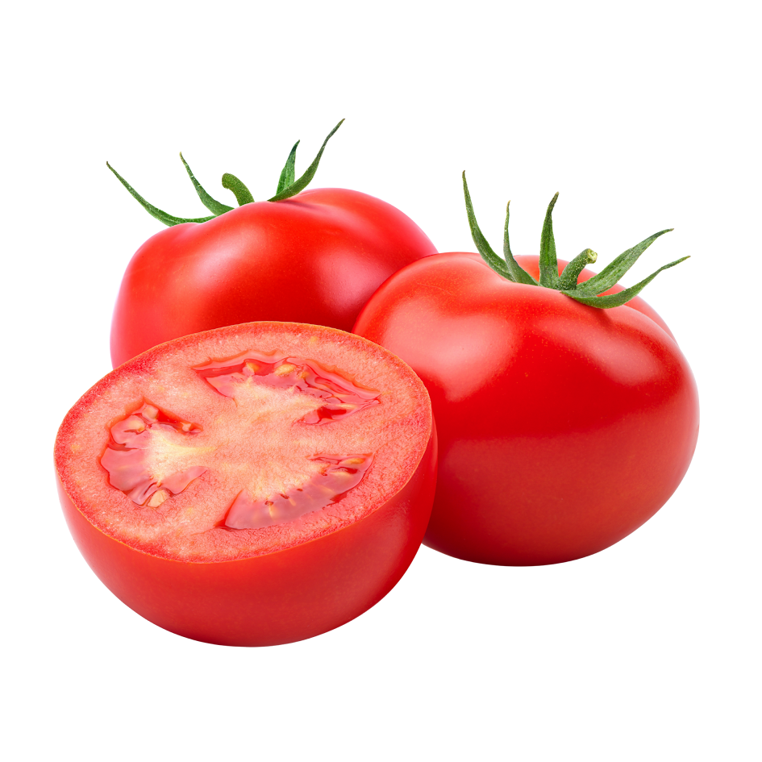

Domaći kečap jednostavan je umak koji možemo pripremiti od svježih rajčica i nekoliko osnovnih začina.
Najbolji rezultat dobit ćemo ako koristimo zrele i mesnate rajčice
Za kečap su odlične mesnate sorte poput Roma i San Marzano. Možemo koristiti i sortu Volovsko srce, ali će tada umak možda trebati nešto duže kuhati

više informacija možete pronaći na internetu
Dobar kečap treba izražen okus rajčice, odgovarajuću gustoću i uravnotežen okus slatkog i kiselog okusa
recept je prilagođen za 2 kg rajčica. Temperatura kuhabnja ne mora biti visoka; važnije je isparavanje vode
Za osnovni omjer možemo koristiti:
2 kg rajčica + 50 ml octa + 2 žlice šećera
Kiselost možemo odrediti pomoću pH vrijednosti: pH manje od 45
Kod nekih recepata koristi se i omjer soli od približno 1% ukupne mase sastojaka.
Domaći recept za kečap preporučuje kuhanje kako bi se dobila gustoća
Za jači okus, dodajte čilija